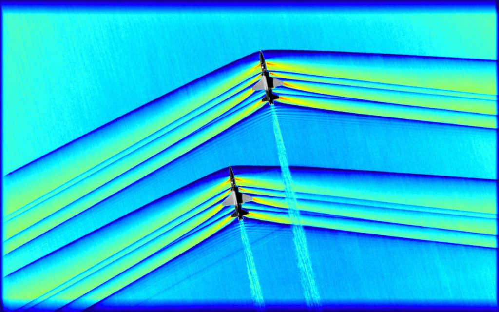
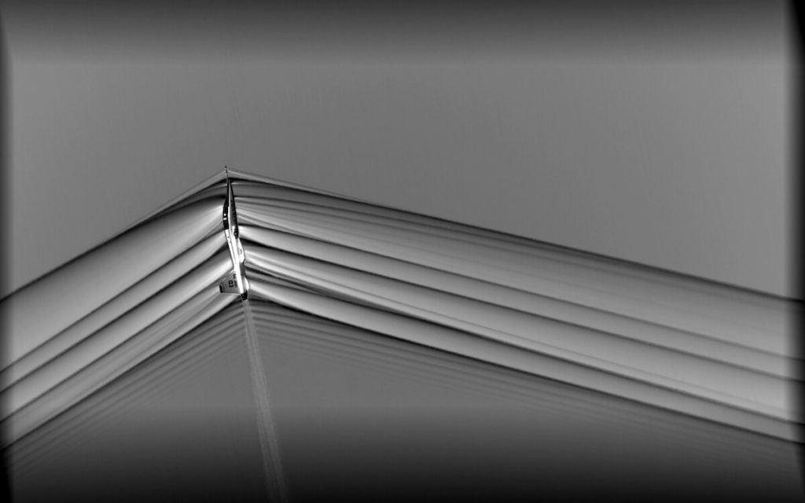
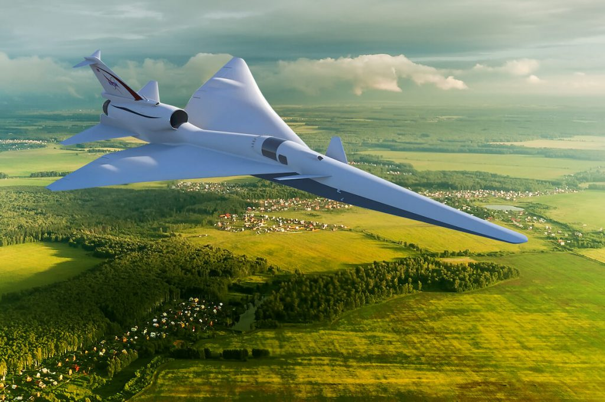
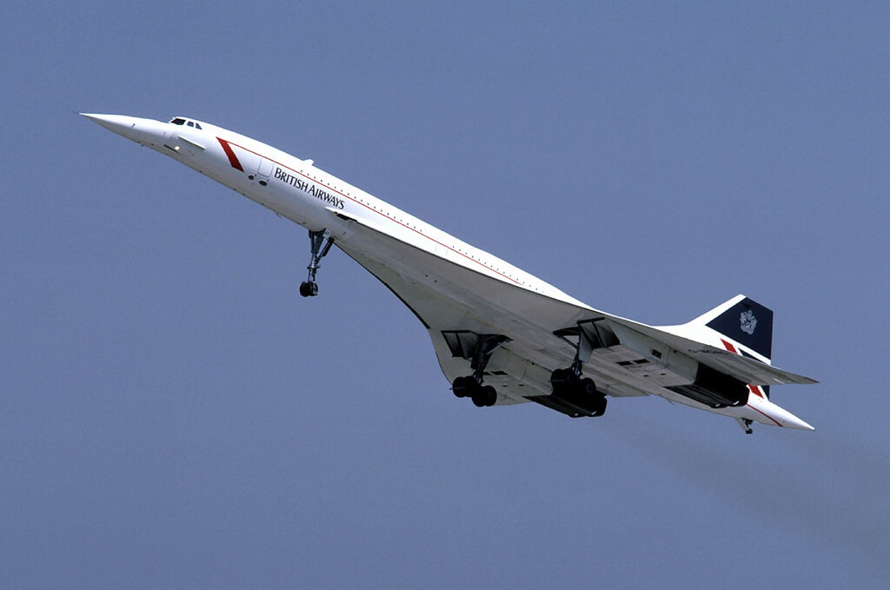

အခု ဓါတ်ပုံ တွေဟာ နာဆာက သုတေသန ပြုနေတဲ့ သံလွန်လှိုင်း ပေါက်ကွဲမှု (Sonic Booom) မဖြစ်ပေါ်ပဲ အသံထက် မြန်တဲ့ နှုန်းနဲ့ ပျံသန်းနိုင်မယ့် လေယာဉ် သုတေသန စီမံကိန်း အတွင်း ရိုက်ကူး ထားတဲ့ ပုံတွေထဲက အချို့ပုံတွေ ဖြစ်ပါတယ်။
အသံရဲ့ အလျင်ဟာ တစ်မိနစ်ကို မိုင် ၇၆၀ (ကီလိုမီတာ ၁,၂၂၅) နှုန်း ရှိပါတယ်။ (ဒါက ပင်လယ် ရေမျက်နှာပြင် အမြင့်မှာ ရှိတဲ့ အသံရဲ့ အမြန်နှုန်း ဖြစ်ပါတယ်။)
ကမ္ဘာ့ လေထုထဲမှာ အလွန်လျှင်မြန်တဲ့ အလျင်နဲ့ သွားတဲ့ လေယာဉ်တွေဟာ ဒီ အသံရဲ့ အလျင်ကို ကျော်သွားတဲ့ အချိန်မှာ လေထုထဲမှာ ပြင်းထန်တဲ့ လှိုင်းတွေ ဖြစ်ပေါ်လာပါတယ်။ Shock wave လို့ ခေါ်တဲ့ ဒီ လှိုင်းတွေကြောင့် ပြင်းထန်တဲ့ ပေါက်ကွဲသံ ထွက်ပေါ်လာပါတယ်။ ဒီ ပေါက်ကွဲသံကို Sonic Boom လို့ ခေါ်တာပါ။

ဒီ အသံထက် မြန်တဲ့ အလျင်နဲ့ ပျံသန်းတဲ့ အချိန်မှာ ဖြစ်ပေါ်လာတဲ့ လှိုင်းတွေကို လေ့လာဖို့ နာဆာက ဒီ လှိုင်းတွေကို အထူး ကင်မရာတွေ အသုံးပြုပြီး ဓါတ်ပုံ ရိုက်ယူ နိုင်ခဲ့ပါတယ်။
ပထမ ပုံမှာ တွေ့ရတဲ့ လှိုင်းတွေ ရရှိဖို့ ကာလီဖိုးနီးယား ပြည်နယ်မှာ ရှိတဲ့ Armstrong Flight Research Center မှာ T-38 ဂျက်တိုက်လေယာဉ် နှစ်စီးကို တစ်စီး နဲ့ တစ်စီး ပေ ၃၀ ပဲ ခွာပြီး အသံလွန် အရှိန်နဲ့ ပျံသန်း စေပါတယ်။
ဒီလေယာဉ် နှစ်စီးဟာ အမြင့်ပေ ၃၀,၀၀၀ မှာ ပျံသန်းသွားတာ ဖြစ်ပါတယ်။ ဒီ လေယာဉ် နှစ်စီး ဖြတ်ပျံသွားမယ့် အောက်ကနေ နောက် လေယာဉ် တစ်စီးနဲ့ စောင့်ပြီး ဒီ ဓါတ်ပုံကို ရိုက်ယူထားတာ ဖြစ်ပါတယ်။

“အခု ရရှိတဲ့ အချက်အလက် တွေဟာ ဒီ လှိုင်းတွေ ဘယ်လို တစ်ခုနဲ့ တစ်ခု အပြန်အလှန် သက်ရောက်မှု ရှိသလဲ ဆိုတာ နားလည်ဖို့ အထောက်အကူ ဖြစ်စေမှာ ဖြစ်ပါတယ်” လို့ သူက ဆက်ရှင်းပြပါတယ်။
Sonic Boom အသံလွန် ပေါက်ကွဲသံ တွေဟာ အသံထက် မြန်တဲ့ ပျံသန်းရေး အတွက် အဓိက အနှောက်အယှက် ဖြစ်နေဆဲပါ။ ဒီ ပေါက်ကွဲသံ တွေကြောင့် မြေပြင်ပေါ်က လူတွေကို စိတ်အနှောက် အယှက် ဖြစ်စေပါတယ်။ ဒါတင် မဟုတ် သေးပါဘူး။ မှန်ပြတင်းတွေ ကွဲထွက် ကုန်တာမျိုးလို ပျက်စီး မှုတွေကိုလဲ ဖြစ်စေနိုင်ပါတယ်။
ဒါ့ကြောင့် နိုင်ငံ အတော်များများမှာ မြို့ပြ တွေရဲ့ အပေါ်မှာ အသံလွန် အလျင်နဲ့ လေယာဉ် ပျံသန်းမှုကို မပြုလုပ်ဖို့ ဥပဒေနဲ့ တားဖြစ် ကန့်သတ် ထားကြပါတယ်။

အခုလို sonic boom အသံလှိုင်း ပေါက်ကွဲမှု မဖြစ်ပေါ်ပဲ အသံလွန် ခရီး သွားနိုင်မယ့် သုတေသနသာ အောင်မြင်ခဲ့မယ် ဆိုရင် ၂၀၀၃ ခုနှစ်က ကွန်းကော့ အသံထက်မြန်တဲ့ ခရီးသည်တင် လေယာဉ်တွေ အနားပေး လိုက်ပြီးတဲ့ အချိန်နောက်ပိုင်း ပထမဆုံး အသံထက် မြန်တဲ့ ခရီးသည် ပို့ဆောင်ရေး လေယာဉ်တွေ ထွက်ပေါ်လာဖို့ လမ်းစ ပေါ်လာလိမ့်မယ်လို့ ဆိုပါတယ်။
အရင်ကတဲက ဒီ ကွန်းကော့ လေယာဉ်တွေ ပျံသန်းခွင့်ကို အချို့နိုင်ငံ တွေက ပိတ်ပင်ထား ခဲ့ကြတာပါ။ ဒါကလဲ အပေါ်က ပြောခဲ့တဲ့ အသံလွန်လှိုင်း ပေါက်ကွဲမှု ကြောင့် ဖြစ်ပါတယ်။
